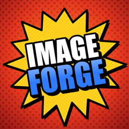

Support
Get help
Found a bug, have a question, or want to suggest a feature?
We read everything.
Frequently asked questions
How do I get started?
On the Filaments tab, add the spools you own and turn on In Design for the ones you want to use. On the Design tab, pick a photo, choose a mode, and check the preview. Under Printer, pick your printer and slicer, then tap Export 3MF. The How to tab in the app explains every mode and setting.
Which mode should I use?
- Full color: photo shading from thin, stacked layers of translucent filament. Best for photos.
- Relief: each color printed one step higher than the last, for a bold, raised look.
- Emblem: flat color parts with optional outlines. Best for logos, patches and cartoon art.
- Artistic: the photo split into bands, with any spool you choose for each band.
Does it work with my printer?
ImageForge works with FDM printers. Pick yours from the list under Printer, or choose Custom printer and set the bed size, nozzle and number of filament slots.
My printer has one nozzle and no filament changer. What can I print?
Full color, Relief and Artistic printed as Steps all work: the printer stops at each color change so you can load the next spool. Emblem and Artistic printed Flat put every color on the same layers, so they need a filament changer or several tool heads.
How do I open the file in my slicer?
- Bambu Studio: use File > Open Project. For the X1 Carbon and P1S, slots, layer heights and filament changes are already set.
- PrusaSlicer: use File > Open project. The filament changes come in already set, and your own printer and print settings are kept.
- OrcaSlicer, Cura and others: open the 3MF, then add a color change at each layer the print sheet lists.
Tap Print sheet in the app for the full list of filaments and color changes for your print.
My print looks different from the preview. Why?
Every spool lets light through a little differently. Print a test chip to measure yours: on the Filaments tab, open a spool and tap Export test chip. The app uses what you measure to make the preview match your real filament.
What kind of picture prints best?
A clear subject with good contrast. Logos and cartoon art with flat colors work very well in Emblem and Artistic. Images with a transparent background keep their cut-out shape, and plain backgrounds are trimmed away.
Can I print something bigger than my bed?
Yes. Turn on Tiling to split the picture into pieces that each fit your bed. Colors stay matched across the tiles.
Where are my photos stored?
On your device only. ImageForge makes no network requests and never uploads your photos. See the privacy policy.